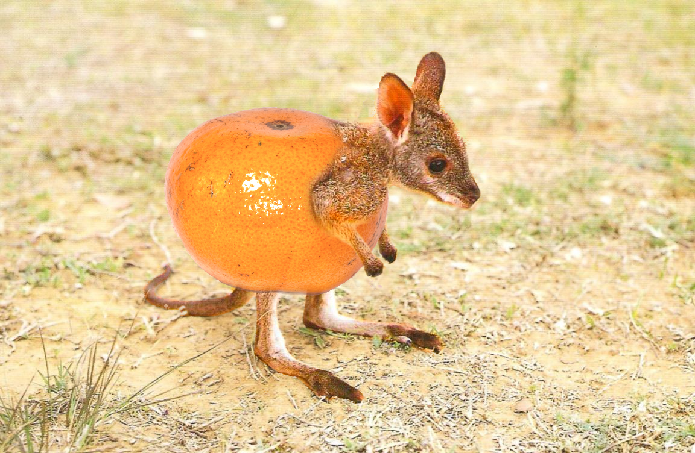

The tangerine kangaroo, or citrus macropus rufus is the most adored terrestrial mammal-fruit native to Australia, the most prized of all kangaruits, and the plumpest extant marsupial. It is found across mainland Australia, avoiding only the more fertile areas in the south, the east coast, and the northern rainforests.
Please support this lovely creature in its journey to become extinct. Only you can adopt our cause. Thank you. --io